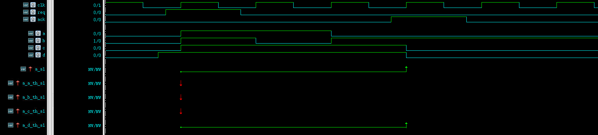
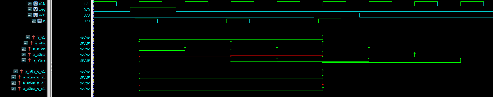
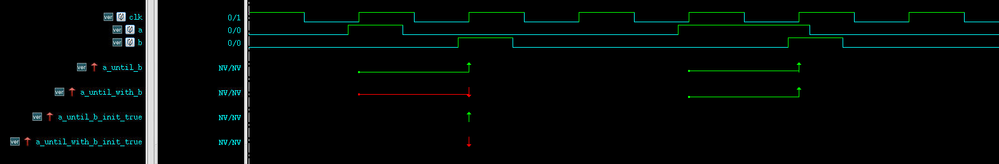

常用的匹配操作符有throughout, within, until和until_with.
1. throughout 这个操作符是用于建立一个时间窗，在时间窗内待检测表达式要一直为真。这里的时间窗一般定义为sequence，从检测sequence的起始时刻开始检测，这一点在下面有解释。
具体例子,
1 2 3 4 5 6 7 8 9 10 11 12 13 14 15 16 17 18 19 20 21 22 23 24 25 26 27 28 29 30 31 32 33 34 35 36 37 sequence s1; (req ##3 $rose (ack)); endsequence property p_a_th_s1(); @(posedge clk) ( req |-> (a throughout s1) ); endproperty property p_b_th_s1(); @(posedge clk) ( req |-> (b throughout s1) ); endproperty property p_c_th_s1(); @(posedge clk) ( req |-> (c throughout s1) ); endproperty property p_d_th_s1(); @(posedge clk) ( req |-> (d throughout s1) ); endproperty a_s1: assert property (@(posedge clk) req |-> s1); a_a_th_s1: assert property (p_a_th_s1()); a_b_th_s1: assert property (p_b_th_s1()); a_c_th_s1: assert property (p_c_th_s1()); a_d_th_s1: assert property (p_d_th_s1());

值得注意的是图中a_c_th_s1这个断言，虽然从图中看c一直为真，但在s1的最起始时刻检测为假，最终判定为假。相比之下d在起始时刻检测为真，并一直保持为真直到s1结束，最终判定为真。
2. within within可以看做是throughout的广义版本，形式为(expression within sequence)。
1 2 3 4 5 6 7 8 9 10 11 12 13 14 15 16 17 18 19 20 21 22 23 24 25 26 27 28 29 30 31 32 33 34 35 36 37 38 39 40 41 42 43 44 45 46 47 48 49 sequence s1; (req ##4 $rose (ack)); endsequence sequence a0a; a; endsequence sequence a1na; (a ##1 ~a); endsequence sequence a2na; (a ##2 ~a); endsequence sequence a3na; (a ##3 ~a); endsequence property p_a0a_w_s1(); @(posedge clk) req |-> (a0a within s1); endproperty property p_a1na_w_s1(); @(posedge clk) req |-> (a1na within s1); endproperty property p_a2na_w_s1(); @(posedge clk) req |-> (a2na within s1); endproperty property p_a3na_w_s1(); @(posedge clk) req |-> (a3na within s1); endproperty a_s1: assert property (@(posedge clk) req |-> s1); a_a0a: assert property (@(posedge clk) a |-> a0a); a_a1na: assert property (@(posedge clk) a |-> a1na); a_a2na: assert property (@(posedge clk) a |-> a2na); a_a3na: assert property (@(posedge clk) a |-> a3na); a_a0a_w_s1: assert property (p_a0a_w_s1()); a_a1na_w_s1: assert property (p_a1na_w_s1()); a_a2na_w_s1: assert property (p_a2na_w_s1()); a_a3na_w_s1: assert property (p_a3na_w_s1());

从图中可以看出，sequence s1构成了一个类似于[s1 start, s1 end]的闭合时间窗区间，包括起始和结束的两个时刻。在这个闭区间内，只要表达式成立，那么就算做检测成立。
3. until及until_with until和until_with的区别在systemverilog LRM中有如下的解释:
expr1 until expr2: expr1必须一直为真直到expr2为真的前一个周期，不包括expr2为真的那个时刻。 expr1 until_with expr2: expr1必须一直为真直到expr2为真的前一个周期，包括expr2为真的那个时刻。 所以主要区别就是是否包含最后那一个expr2为真时刻。
具体例子，
1 2 3 4 5 6 7 8 9 10 11 12 13 14 15 16 17 18 19 20 21 22 23 24 25 26 27 property p_a_until_b(); @(posedge clk) a |-> (a until b); endproperty a_until_b: assert property (p_a_until_b()); property p_a_until_with_b(); @(posedge clk) a |-> (a until_with b); endproperty a_until_with_b: assert property (p_a_until_with_b()); property p_a_until_b_init_true(); @(posedge clk) (!a && b) |-> (a until b); endproperty a_until_b_init_true: assert property (p_a_until_b_init_true()); property p_a_until_with_b_init_true(); @(posedge clk) (!a && b) |-> (a until_with b); endproperty a_until_with_b_init_true: assert property (p_a_until_with_b_init_true());

图中显示了until和until_with的区别，以及expr1和expr2同时成立的情况。
4. strong操作符 until以及until都有一个强要求版本: s_until, s_until_with. (类似的还有eventually和s_eventually操作符，但在非必要情况下不建议使用这两个操作符，太消耗内存)。或者用’strong’操作符，strong(exprssion)，起同样效果。
一般情况下, (expr1 until expr2)中的expr2是一个发生于未来的事件，它并不一定会真正的发生。也就是说(expr1 until expr2)不一定有一个事件结束点。strong类型的操作符就是为了解决这个问题，它要求expr2必须发生，否则就不成立。注意一点的是，这里不成立的判定一般是在形式验证中会正确得出，在一般的仿真过程中，如果expr2最终没出现，仿真器则会给出一个检测未完成(incomplete)的结果。